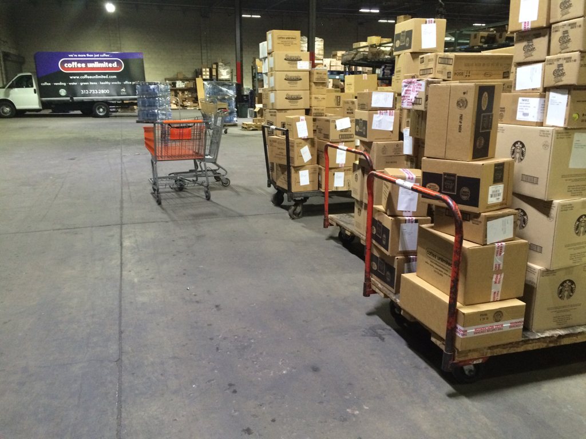
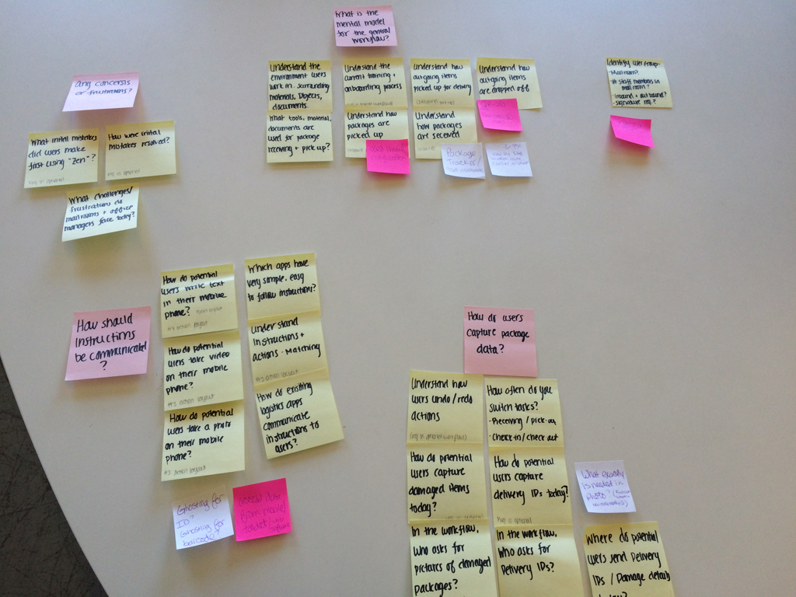

Package Zen
Package Zen is an enterprise solution that simplifies package management in offices, mailrooms, sports arenas and residential buildings. The company provides receptionists, office managers and mail clerks with an iPod Touch, which they can use to log a delivery in seconds. My partner and I were brought on to design the user experience for Package Zen’s growing customer base.
-
Role
UX Researcher, Interaction Designer
-
Deliverables
Interview Transcripts, Task Models, Process Map, Wireframes, Prototype
-
Client
Package Zen
Research
We were fortunate to kickoff our project on a Monday, the same day most offices receive the greatest number of packages for the week. My partner and I observed a delivery from FedEx with 20+ packages for members of the 1871 incubator where we were based. We documented the office manager’s process and took note of the materials she used to log the delivery.
My partner and I then defined our key questions and assumptions to begin laying out our research plan.
Research Questions & Assumptions
Questions
- What is the current mental model for managing office packages?
- How do office managers, mail rooms clerks, receptions capture package data?
- What actions require instructions and how should instructions be communicated
Assumptions
- Package Zen can identify package recipients, even when a barcode is not present
- Primary user groups include receptionists, mail clerks and office managers
- Workflows can be configured, based on the customer’s needs
Additionally, we spoke to a total of 10 front-office professionals and delivery carriers to better understand their motivations, frustrations and behaviors. Our conversations also clarified the mental model of how potential users track and managing deliveries.


User Experience
My partner and I synthesized our research findings and began brainstorming ways to introduce new features. We used a task model to illustrate the user’s workflow and identify pain-points and opportunities.
Our client also shared great insight into specific features the team was planning to rollout. Following our whiteboard session, we documented the data capture screens on a process map for future reference among all stakeholders.
Our initial homescreen mock-ups led us to a round of preference testing to evaluate how users perceive the direction of two arrows.
Wireframes
The homepage test results influenced the design of our remaining wireframes. We took a minimalist approach to keep the user flow as seamless and simple as possible, only including content and options that were absolutely necessary to complete a task.
We also wanted to communicate instructions for efficient adoption across our user base.
Results
Our contribution supports the planned rollout of Package Zen’s additional features. We provided recommendations to improve the core application and allow for customization as needed.
During usability testing, we found that users were able to promptly switch between tasks and easily recognize workflow steps. Our clients were pleased with the results and appreciated the additional documentation we created.